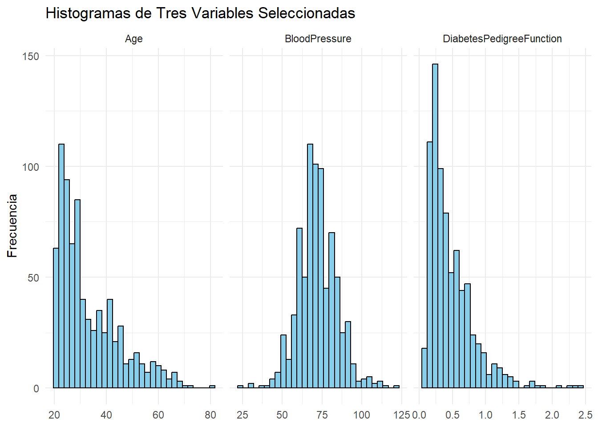
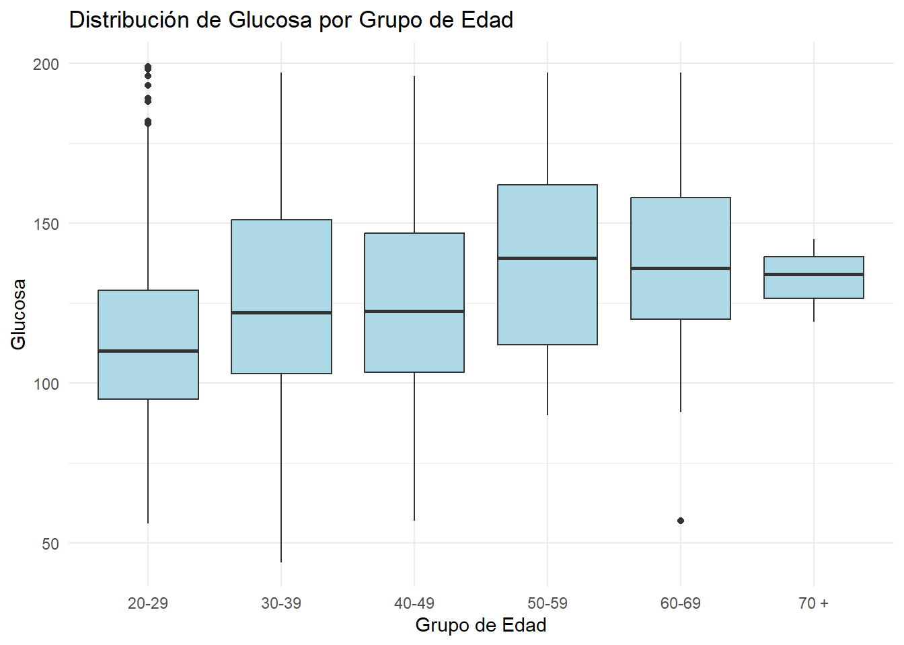
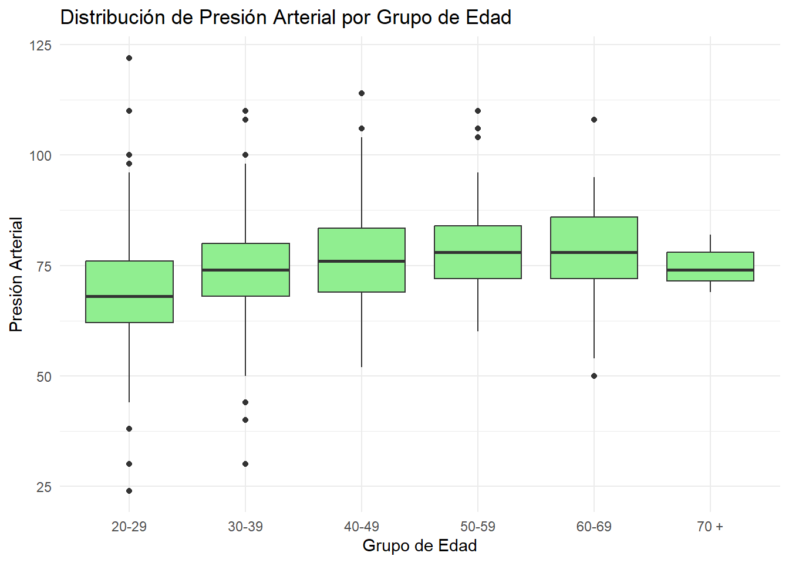
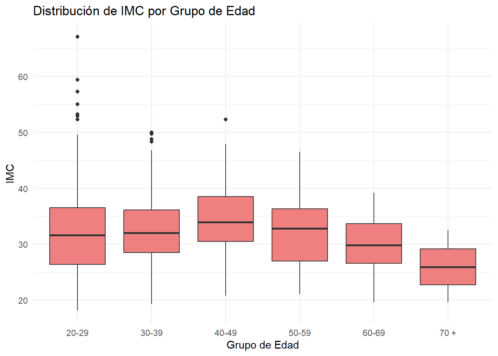
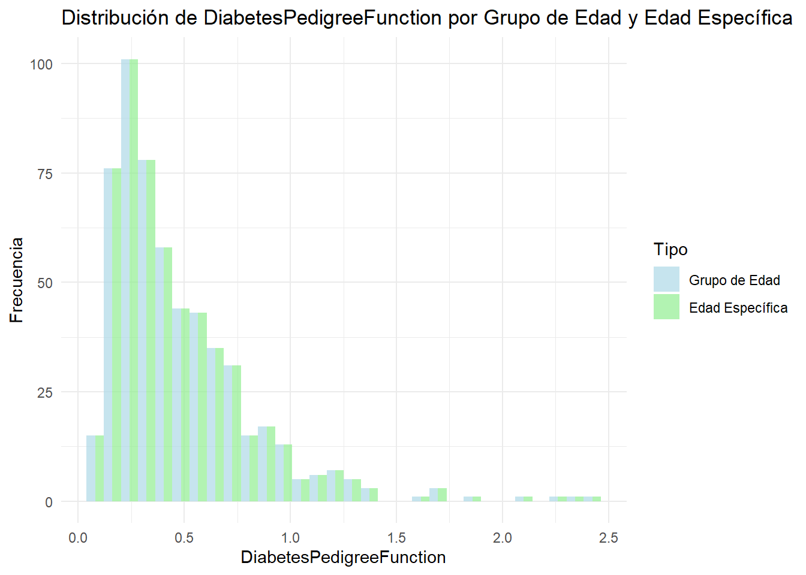
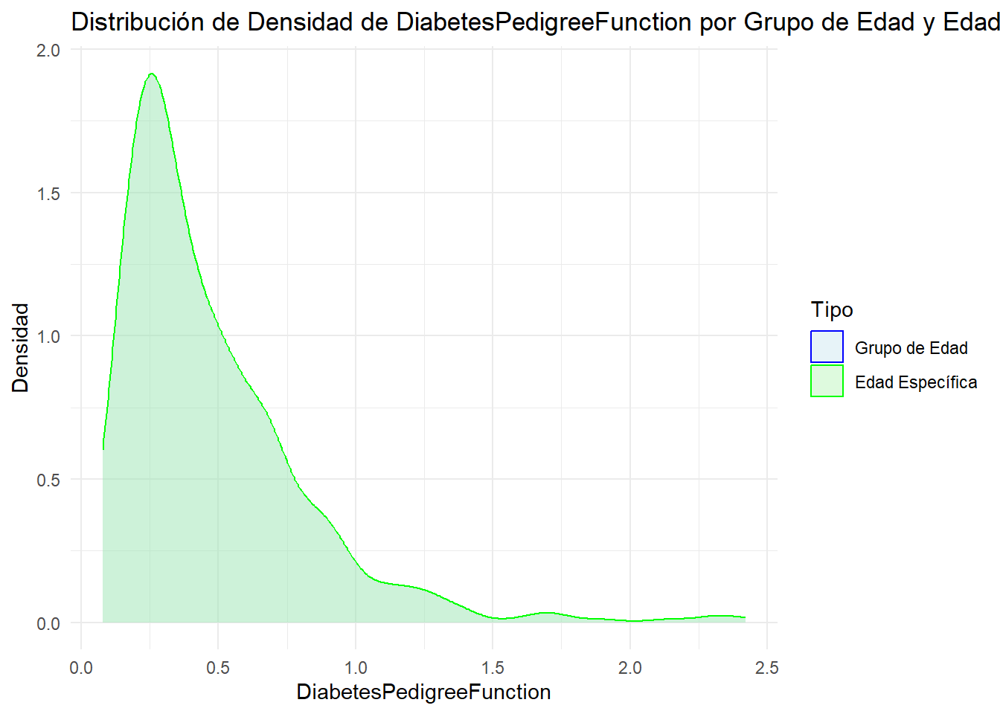

── Conflicts ────────────────────────────────────────── tidyverse_conflicts() ──
✖ plotly::filter() masks dplyr::filter(), stats::filter()
✖ dplyr::lag() masks stats::lag()
ℹ Use the conflicted package (<http://conflicted.r-lib.org/>) to force all conflicts to become errors
Limpieza y Preprocesamiento de Datos Realizamos algunos pasos básicos de limpieza y preprocesamiento de datos, incluyendo el manejo de valores faltantes y la creación de nuevas variables
Code
# Limpiar los datosdiabetes <- diabetes %>%filter(Glucose !=0, BloodPressure !=0, BMI !=0) %>%mutate(SkinThickness =ifelse(SkinThickness ==0, mean(SkinThickness, na.rm =TRUE), SkinThickness)) %>%# Verificar si la columna Insulin existe antes de usarlamutate(InsulinKnown =ifelse("Insulin"%in%names(.), ifelse(Insulin !=0, 1, 0), NA)) %>%select(Pregnancies, Glucose, BloodPressure, SkinThickness, BMI, DiabetesPedigreeFunction, Age, InsulinKnown, Outcome)# Dimensiones de los datos y valores faltantesdata_summary <-list(dimensions =dim(diabetes),missing_values =sum(is.na(diabetes)),duplicated_rows =sum(duplicated(diabetes)))# Mostrar el resumen de los datosdata_summary
Análisis Exploratorio de Datos Distribución del Resultado {.smaller} Comenzamos visualizando la distribución de la variable de resultado.
Code
outcome_count <- diabetes %>%count(Outcome) %>%rename(Outcome = Outcome, count = n)fig <-plot_ly(outcome_count, labels =~Outcome, values =~count, type ='pie', marker =list(colors =c('#FECB52', 'red'))) %>%layout(title ='Outcome', height =400, width =400)## Warning: Specifying width/height in layout() is now deprecated.## Please specify in ggplotly() or plot_ly()fig
Distribución de la variable Outcome
Histogramas de Variables {.smaller} Exploramos la distribución de las otras variables en el dataset utilizando histogramas
Code
#| label: histogramas#| fig-cap: "Histogramas de Tres Variables Seleccionadas"#| fig-alt: |#| Histogramas que muestran la distribución variables.library(tidyverse)# Seleccionar las variables numéricas del dataset, excluyendo Outcomenumeric_vars <- diabetes %>%select(where(is.numeric)) %>%select(-Outcome)# Seleccionar las tres variables específicasselected_vars <-c("BloodPressure", "DiabetesPedigreeFunction", "Age")# Filtrar el dataset para las tres variables seleccionadasselected_data <- diabetes %>%select(all_of(selected_vars)) %>%pivot_longer(cols =everything(), names_to ="variable", values_to ="value")# Crear histogramas para las variables seleccionadasggplot(selected_data, aes(x = value)) +geom_histogram(bins =30, fill ="skyblue", color ="black") +facet_wrap(~variable, scales ="free_x") +theme_minimal() +labs(title ="Histogramas de Tres Variables Seleccionadas", x =NULL, y ="Frecuencia")

Matriz de Correlación {.smaller} Finalmente, visualizamos la correlación entre las variables usando un mapa de calor.
Code
# Verificar el tipo de cada columna en el dataframesapply(diabetes, class)
#| label: matriz-correlacion#| fig-cap: "Matriz de Correlación"#| fig-alt: |#| Un mapa de calor que muestra la correlación entre las variables numéricas en el dataset.library(tidyverse)library(reshape2) # Para la función melt# Seleccionar solo las columnas numéricasnumeric_vars <- diabetes %>%select(Pregnancies, Glucose, BloodPressure, SkinThickness, BMI, DiabetesPedigreeFunction, Age)# Calcular la matriz de correlacióncor_mat <-cor(numeric_vars, use ="complete.obs")# Convertir la matriz a formato largo para ggplotcor_mat_long <-melt(cor_mat)# Crear el mapa de calorggplot(cor_mat_long, aes(x = Var1, y = Var2, fill = value)) +geom_tile() +scale_fill_gradient2(low ="blue", high ="red", mid ="white", midpoint =0, limit =c(-1, 1)) +theme_minimal() +labs(title ="Matriz de Correlación", x =NULL, y =NULL, fill ="Correlación") +theme(axis.text.x =element_text(angle =45, hjust =1))
Agrupación de Edades
Code
#| label: age-grouping# Crear grupos de edadesbins <-c(20, 30, 40, 50, 60, 70, Inf)labels <-c('20-29', '30-39', '40-49', '50-59', '60-69', '70 +')diabetes <- diabetes %>%mutate(AgeGroup =cut(Age, breaks = bins, labels = labels, right =FALSE))# Ver la distribución de las edades en cada grupotable(diabetes$AgeGroup)
#| label: distribution-analysis# Resumen estadístico de las variables por grupo de edadpivot_table <- diabetes %>%group_by(AgeGroup) %>%summarise(Glucose_Mean =mean(Glucose, na.rm =TRUE),BloodPressure_Mean =mean(BloodPressure, na.rm =TRUE),BMI_Mean =mean(BMI, na.rm =TRUE) )# Mostrar el resumenpivot_table
#| label: distribution-visualization#| fig-cap: "Distribución de Glucosa, Presión Arterial y IMC por Grupo de Edad"#| fig-alt: "Gráficos de caja para Glucosa, Presión Arterial y IMC en diferentes grupos de edad"# Visualización con boxplot para cada variable en cada grupo de edadggplot(diabetes, aes(x = AgeGroup)) +geom_boxplot(aes(y = Glucose), fill ="lightblue") +labs(title ="Distribución de Glucosa por Grupo de Edad", x ="Grupo de Edad", y ="Glucosa") +theme_minimal()

Code
ggplot(diabetes, aes(x = AgeGroup)) +geom_boxplot(aes(y = BloodPressure), fill ="lightgreen") +labs(title ="Distribución de Presión Arterial por Grupo de Edad", x ="Grupo de Edad", y ="Presión Arterial") +theme_minimal()

Code
ggplot(diabetes, aes(x = AgeGroup)) +geom_boxplot(aes(y = BMI), fill ="lightcoral") +labs(title ="Distribución de IMC por Grupo de Edad", x ="Grupo de Edad", y ="IMC") +theme_minimal()

Code
library(ggplot2)library(dplyr)# Filtrar para los grupos de edad 20-29 y 30-39selected_age_groups <- diabetes %>%filter(AgeGroup %in%c('20-29', '30-39'))# Visualizar la distribución de DiabetesPedigreeFunction en estos gruposggplot(selected_age_groups, aes(x = DiabetesPedigreeFunction, fill = AgeGroup)) +geom_histogram(position ="dodge", bins =30, alpha =0.7) +scale_fill_manual(values =c("lightblue", "lightgreen"), labels =c('20-29', '30-39')) +theme_minimal() +labs(title ="Distribución de DiabetesPedigreeFunction por Grupo de Edad (20-29 y 30-39)",x ="DiabetesPedigreeFunction",y ="Frecuencia",fill ="Grupo de Edad")
Code
# Gráfico de densidad de DiabetesPedigreeFunction por Grupo de Edadggplot(selected_age_groups, aes(x = DiabetesPedigreeFunction, color = AgeGroup, fill = AgeGroup)) +geom_density(alpha =0.3) +scale_color_manual(values =c("blue", "green"), labels =c('20-29', '30-39')) +scale_fill_manual(values =c("lightblue", "lightgreen"), labels =c('20-29', '30-39')) +theme_minimal() +labs(title ="Distribución de Densidad de DiabetesPedigreeFunction por Grupo de Edad (20-29 y 30-39)",x ="DiabetesPedigreeFunction",y ="Densidad",color ="Grupo de Edad",fill ="Grupo de Edad")
Code
#| label: analisis-distribucion-diabetes#| fig-width: 10#| fig-asp: 0.618#| fig-alt: "Histograma y gráfico de densidad de DiabetesPedigreeFunction"#| fig-cap: "Distribución y densidad de DiabetesPedigreeFunction para los grupos de edad y edades específicas."# Filtrar los datos para los grupos de edad 20-29 y 30-39diabetes_filtered <- diabetes %>%filter(AgeGroup %in%c('20-29', '30-39'))# Filtrar los datos para edades específicas (no agrupadas) pero en el mismo dataframediabetes_specific_ages <- diabetes %>%filter(Age >=20& Age <=39)# Combinar ambos datasetsdiabetes_combined <-bind_rows(mutate(diabetes_filtered, Type ="Grupo de Edad"),mutate(diabetes_specific_ages, Type ="Edad Específica"))# Histograma de DiabetesPedigreeFunction para los grupos de edad y edades específicasggplot(diabetes_combined, aes(x = DiabetesPedigreeFunction, fill = Type)) +geom_histogram(position ="dodge", bins =30, alpha =0.7) +scale_fill_manual(values =c("lightblue", "lightgreen"), labels =c("Grupo de Edad", "Edad Específica")) +theme_minimal() +labs(title ='Distribución de DiabetesPedigreeFunction por Grupo de Edad y Edad Específica',x ='DiabetesPedigreeFunction',y ='Frecuencia',fill ='Tipo')

Code
# Gráfico de densidad de DiabetesPedigreeFunction para los grupos de edad y edades específicasggplot(diabetes_combined, aes(x = DiabetesPedigreeFunction, color = Type, fill = Type)) +geom_density(alpha =0.3) +scale_color_manual(values =c("blue", "green"), labels =c("Grupo de Edad", "Edad Específica")) +scale_fill_manual(values =c("lightblue", "lightgreen"), labels =c("Grupo de Edad", "Edad Específica")) +theme_minimal() +labs(title ='Distribución de Densidad de DiabetesPedigreeFunction por Grupo de Edad y Edad Específica',x ='DiabetesPedigreeFunction',y ='Densidad',color ='Tipo',fill ='Tipo')

Code
#| label: resumen-estadistico-edad#| fig-width: 7#| fig-asp: 0.618#| fig-alt: "Resumen estadístico de DiabetesPedigreeFunction por edad"#| fig-cap: "Resumen estadístico de la función DiabetesPedigreeFunction para personas de 20 a 39 años, agrupado por edad."library(dplyr)library(knitr)# Filtrar los datos para las edades específicas entre 20 y 39 añosdiabetes_filtered <- diabetes %>%filter(Age >=20& Age <=39)# Resumen estadístico para DiabetesPedigreeFunction por edadsummary_stats <- diabetes_filtered %>%group_by(Age) %>%summarise(Mean =mean(DiabetesPedigreeFunction, na.rm =TRUE),Median =median(DiabetesPedigreeFunction, na.rm =TRUE),SD =sd(DiabetesPedigreeFunction, na.rm =TRUE),Min =min(DiabetesPedigreeFunction, na.rm =TRUE),Max =max(DiabetesPedigreeFunction, na.rm =TRUE),Count =n() )# Mostrar el resumen estadísticokable(summary_stats, format ="latex", booktabs =TRUE, caption ="Resumen Estadístico de DiabetesPedigreeFunction por Edad (20-39 años)")
Code
#| label: filtrar-edad-70plus#| fig-width: 5#| fig-asp: 0.618#| fig-alt: "Filtrar y manejar valores NA en el conjunto de datos diabetes"#| fig-cap: "Filtrado del conjunto de datos para incluir solo personas de 70 años o más y manejo de valores NA en la columna BMI."# Filtrar el grupo de edad 70+ y manejar valores NAdiabetes_70plus <- diabetes %>%filter(Age >=70) %>%mutate(BMI =ifelse(is.na(BMI), median(BMI, na.rm =TRUE), BMI)) # Imputar valores NA con la mediana
Code
#| label: recode-insulin-known#| fig-width: 5#| fig-asp: 0.618#| fig-alt: "Recode de la variable InsulinKnown"#| fig-cap: "Recode de valores en la variable InsulinKnown en el conjunto de datos diabetes_70plus."diabetes_70plus <- diabetes_70plus %>%mutate(InsulinKnown =recode(InsulinKnown, `3`=0))
Code
#| fig-width: 5#| fig-asp: 0.618#| fig-alt: "Resumen estadístico del BMI por grupo de Outcome"#| fig-cap: "Resumen estadístico del BMI para cada grupo de Outcome en el conjunto de datos diabetes_70plus."#Resumen estadístico del BMIsummary_bmi <- diabetes_70plus %>%group_by(Outcome) %>%summarise(mean_bmi =mean(BMI, na.rm =TRUE),sd_bmi =sd(BMI, na.rm =TRUE),median_bmi =median(BMI, na.rm =TRUE),min_bmi =min(BMI, na.rm =TRUE),max_bmi =max(BMI, na.rm =TRUE))print(summary_bmi)## # A tibble: 2 × 6## Outcome mean_bmi sd_bmi median_bmi min_bmi max_bmi## <int> <dbl> <dbl> <dbl> <dbl> <dbl>## 1 0 22.8 4.45 22.8 19.6 25.9## 2 1 32.5 NA 32.5 32.5 32.5